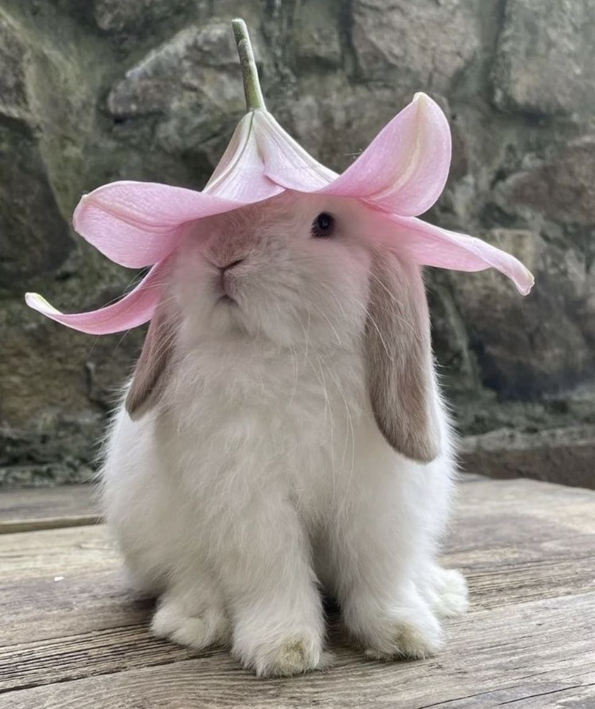

Rabbits are social lagomorphs whose teeth and nails never stop growing, which is why they need to chew on hay and other items to wear them down. They are crepuscular, meaning they are most active at dawn and dusk, and have a wide field of vision that is nearly 360 degrees. Rabbits are herbivores and eat their own nutrient-rich droppings (cecotropes) to get the necessary nutrients they missed during the first pass through the digestive system.